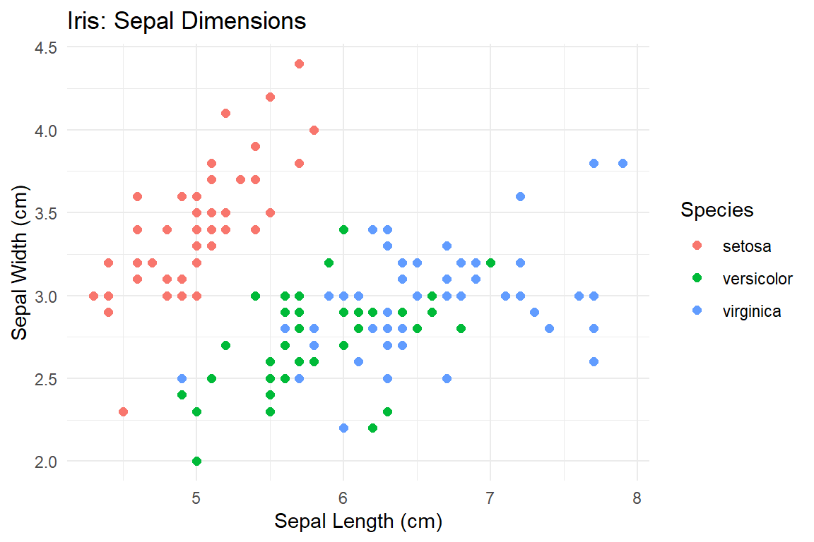
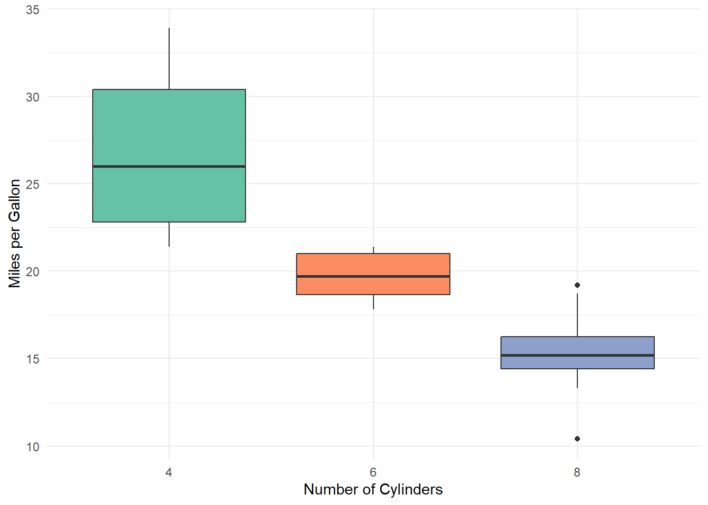
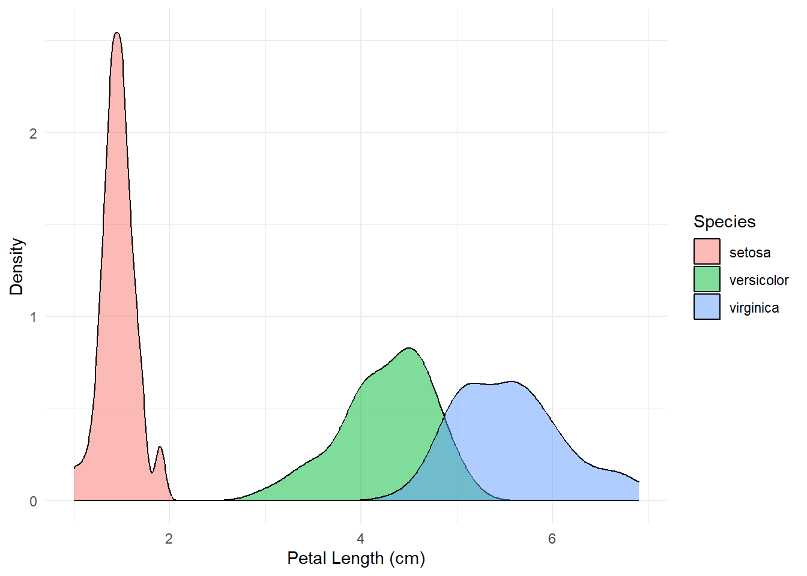
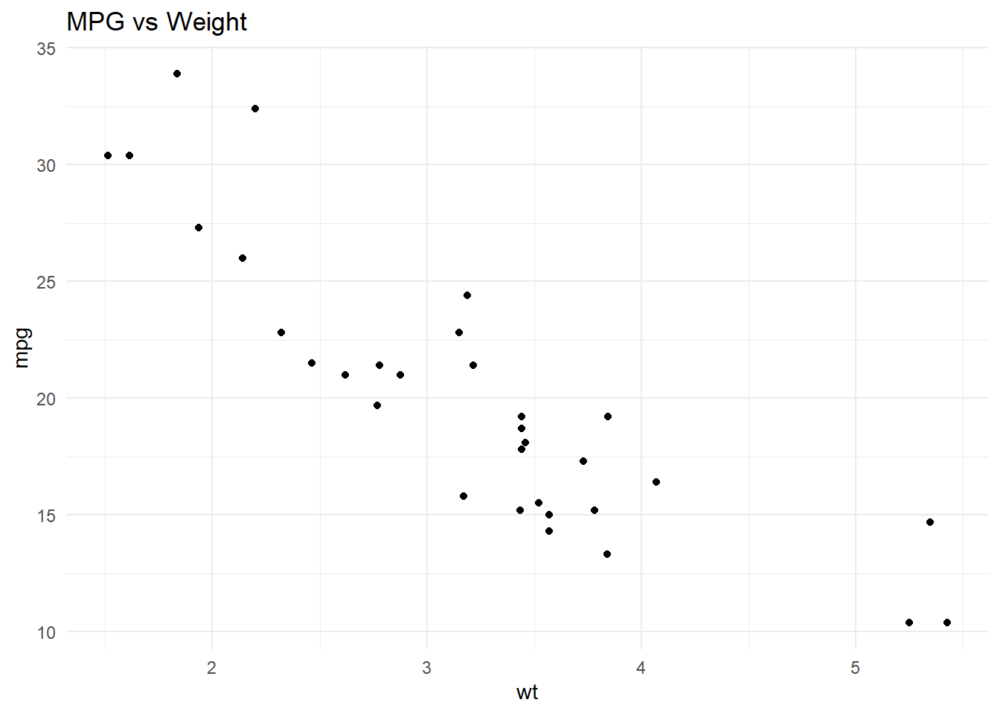
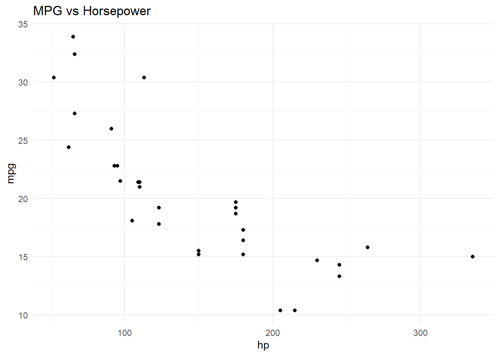

18 R Markdown
Imagine you just finished a killer analysis—maybe you found the customer segment that’s bleeding money, or you built a model that predicts next quarter’s revenue. Now your boss says, “Great, put it in a report.”
So you do what everyone does: you run your code in R, copy-paste the numbers into Word, screenshot your charts, drag them into a slide deck, and pray that nothing changes before the meeting.
Then the data gets updated.
R Markdown exists so you never have to live that nightmare again. It lets you put your writing and your code in a single file. When you click one button, R runs everything and produces a polished HTML page, PDF, or Word doc—charts, tables, numbers, and all. If the data changes, you click the button again. Done.
This chapter will teach you everything you need to make professional-looking reports without suffering.
18.1 What is R Markdown?
An R Markdown file (.Rmd) is basically a document where your words and your R code live together under one roof. When you render (or knit) it, three things happen:
- R runs all your code.
- It grabs the output—tables, charts, printed results.
- It stitches everything together into a finished document.
The result can be an HTML page, a PDF, a Word doc, slides, or even a full website (this book is written in R Markdown!). Think of it as a self-updating report.
You need two packages to make this work:
install.packages("rmarkdown")
install.packages("knitr")That’s it. RStudio already has Pandoc (the engine that converts everything) built in, so you’re good to go.
18.2 The Three Components of an R Markdown Document
Every .Rmd file has exactly three types of content:
- YAML header – The settings block at the top. Think of it as the “cover page setup.”
- Markdown text – Your actual writing: paragraphs, headers, bullet points.
- Code chunks – The R code that produces your numbers and charts.
Here is the simplest R Markdown document you can write:
---
title: "My First Report"
author: "Your Name"
date: "2024-01-15"
output: html_document
---
## Introduction
This is my first R Markdown document.
```{r}
summary(iris)
```Let’s break each piece down.
18.3 YAML Header
The YAML header sits at the very top of your file, sandwiched between two lines of ---. It tells R Markdown the basics: what’s this document called, who wrote it, and what format should the output be?
18.3.1 The Essentials
Here is a perfectly good YAML header:
---
title: "Quarterly Sales Report"
author: "Vivek H. Patil"
date: "2024-09-01"
output: html_document
---That’s really all you need. Four lines, and you’re in business.
Pro tip: Want the date to update automatically every time you knit? Use this:
date: "`r Sys.Date()`"Now your report always shows today’s date. No more “wait, is this the March version or the April version?”
18.3.2 Picking Your Output Format
The three formats you’ll actually use:
| Format | YAML value | When to use it |
|---|---|---|
| HTML | html_document |
Day-to-day reports, sharing via email |
| Word | word_document |
When your boss needs it in Word |
pdf_document |
Formal reports (requires LaTeX) |
HTML is the default, and honestly, it’s the best for most business use cases. It’s interactive, looks great, and you can email it as a single file.
18.3.3 Making It Look Good
You can add a floating table of contents, pick a theme, and let readers show/hide code—all from the YAML header:
---
title: "Sales Analysis Q3 2024"
author: "Vivek H. Patil"
date: "`r format(Sys.Date(), "%B %d, %Y")`"
output:
html_document:
toc: true
toc_float: true
theme: flatly
code_folding: hide
---Here’s what each of those options does:
-
toc: true– Adds a table of contents (generated from your headers). -
toc_float: true– Makes the table of contents float on the side as you scroll. Very handy for long reports. -
theme– Changes the visual style. Trycerulean,cosmo,flatly,journal,readable, orunited. -
code_folding: hide– Hides all code by default, but readers can click to reveal it. Perfect for reports where your manager doesn’t want to see code but your analyst colleague does.
That’s really all the YAML you need to know. If you want to go deeper, Section 18.7 has more detail.
18.4 Markdown Syntax
The writing part of your document uses Markdown—a simple way to format text without messing around in a toolbar. If you’ve ever used Slack formatting or Reddit, you’ve basically used Markdown.
18.4.1 Headers
Use # symbols to create headings. More # signs = smaller heading:
# Big Chapter Title
## Section
### Subsection18.4.2 Bold, Italic, and Friends
-
*italic*gives you italic -
**bold**gives you bold -
***bold italic***gives you bold italic -
~~strikethrough~~gives youstrikethrough
18.4.3 Lists
Bullet points:
- Revenue grew 12%
- Costs decreased 3%
- Labor costs down 5%
- Materials costs up 2%
- Net profit up 15%Which renders as:
- Revenue grew 12%
- Costs decreased 3%
- Labor costs down 5%
- Materials costs up 2%
- Net profit up 15%
Numbered lists:
1. Pull the data
2. Clean the data
3. Analyze the data
4. Pretend the data was clean all along18.4.5 Tables
You can type tables by hand using pipes and dashes:
| Region | Revenue | Growth |
|:--------|--------:|:------:|
| West | $45M | 12% |
| East | $38M | 8% |
| Central | $29M | -2% |Renders as:
| Region | Revenue | Growth |
|---|---|---|
| West | $45M | 12% |
| East | $38M | 8% |
| Central | $29M | -2% |
The colons control alignment: :--- is left, ---: is right, :---: is centered.
For real data-driven tables, you’ll want to generate them from R—see Section 18.8.
18.4.6 Blockquotes
Prefix a line with >:
> "Revenue is vanity, profit is sanity, cash is reality."Renders as:
“Revenue is vanity, profit is sanity, cash is reality.”
18.4.7 Math Equations
Yes, you can write fancy equations if you need to. Most of you won’t need this often, but if you’re in a finance or econ class and your professor wants formulas, here’s the gist:
Inline math uses single dollar signs: $\bar{x} = \frac{1}{n}\sum_{i=1}^{n} x_i$ produces \(\bar{x} = \frac{1}{n}\sum_{i=1}^{n} x_i\).
Display math uses double dollar signs:
\[ \hat{\beta} = (X^T X)^{-1} X^T y \]
If you need more than that, Google “LaTeX math symbols” and you’ll find everything.
18.5 Code Chunks
Code chunks are where the magic happens. This is the R code that actually does your analysis.
18.5.1 Inserting a Code Chunk
A code chunk starts with ```{r} and ends with ```. The keyboard shortcut in RStudio is Ctrl+Alt+I (Windows) or Cmd+Option+I (Mac). Use it. Your fingers will thank you.
head(mtcars)
#> mpg cyl disp hp drat wt qsec vs am gear carb
#> Mazda RX4 21.0 6 160 110 3.90 2.620 16.46 0 1 4 4
#> Mazda RX4 Wag 21.0 6 160 110 3.90 2.875 17.02 0 1 4 4
#> Datsun 710 22.8 4 108 93 3.85 2.320 18.61 1 1 4 1
#> Hornet 4 Drive 21.4 6 258 110 3.08 3.215 19.44 1 0 3 1
#> Hornet Sportabout 18.7 8 360 175 3.15 3.440 17.02 0 0 3 2
#> Valiant 18.1 6 225 105 2.76 3.460 20.22 1 0 3 118.5.2 Naming Your Chunks
Give your chunks a name right after the r. It makes life easier when debugging (“Error in chunk revenue-plot” is way more helpful than “Error in unnamed-chunk-47”):
```{r mpg-summary}
summary(mtcars$mpg)
```
summary(mtcars$mpg)
#> Min. 1st Qu. Median Mean 3rd Qu. Max.
#> 10.40 15.43 19.20 20.09 22.80 33.9018.5.3 The Chunk Options You Actually Need
There are dozens of chunk options, but here are the ones that matter for 95% of business reports:
18.5.3.1 Show/Hide Code and Output
| Option | Default | What it does |
|---|---|---|
echo |
TRUE |
Show the code in the report? |
eval |
TRUE |
Actually run the code? |
include |
TRUE |
Show anything (code + output) in the document? |
echo=FALSE is your best friend for client-facing reports. It hides the code but shows the result:
#> [1] 20.09062The number above came from mean(mtcars$mpg), but the code is hidden. Your VP doesn’t need to see R code. They need the answer.
eval=FALSE shows code without running it. Good for “here’s how you would install this package” examples:
install.packages("tidyverse")include=FALSE runs the code silently—no code, no output in the report. Perfect for setup chunks where you load packages:
```{r setup, include=FALSE}
library(tidyverse)
library(knitr)
```18.5.3.2 Silencing Messages and Warnings
| Option | Default | What it does |
|---|---|---|
message |
TRUE |
Show messages (like package loading info)? |
warning |
TRUE |
Show warnings? |
When you load packages, R loves to tell you about every attached namespace and masked function. Nobody reading your report cares:
Set message=FALSE and warning=FALSE and enjoy the silence.
18.5.3.3 Controlling Figure Size
| Option | Default | What it does |
|---|---|---|
fig.width |
7 |
Width in inches |
fig.height |
5 |
Height in inches |
fig.cap |
NULL |
Caption for the figure |
fig.align |
"default" |
Alignment: "left", "center", "right"
|
out.width |
NULL |
Width in the output (e.g., "80%") |
ggplot(iris, aes(x = Sepal.Length, y = Sepal.Width, color = Species)) +
geom_point(size = 2) +
labs(title = "Iris: Sepal Dimensions",
x = "Sepal Length (cm)",
y = "Sepal Width (cm)") +
theme_minimal()
Figure 18.1: Scatter plot of sepal length versus sepal width, colored by species.
18.5.4 Global Chunk Options
Tired of typing message=FALSE, warning=FALSE on every single chunk? Set defaults for the entire document in a setup chunk at the top:
```{r setup, include=FALSE}
knitr::opts_chunk$set(
echo = TRUE,
warning = FALSE,
message = FALSE,
fig.align = "center"
)
```Any individual chunk can still override these. Think of it like setting company-wide defaults, with each department free to customize.
18.6 Inline R Code
This is one of the most underrated features of R Markdown. You can drop R results right into your sentences.
Instead of writing “the average MPG is 20.1” (and hoping you copied the right number), you write:
The average MPG is `r round(mean(mtcars$mpg), 1)`.And it renders as: The average MPG is 20.1.
Here’s a more realistic example. Let’s say you computed some key numbers:
Now you can write sentences that update themselves:
- The average fuel efficiency across all cars is 20.1 miles per gallon.
- The most powerful car has 335 horsepower.
- There are 7 cars with 6 cylinders in the dataset.
If the data changes, these numbers update automatically the next time you knit. No more copy-paste errors. No more “wait, did I update that number on slide 14?” This is the kind of thing that separates a good analyst from one who stays late fixing reports.
18.7 Output Formats in Detail
18.7.1 HTML Documents
HTML is the Swiss Army knife of output formats. Here’s a full-featured setup:
---
output:
html_document:
toc: true
toc_float: true
number_sections: true
theme: flatly
code_folding: hide
df_print: paged
----
df_print: paged– Makes data frames display as nice, paginated tables readers can click through. Way better than a wall of text. -
self_contained: true(the default) – Embeds everything into one HTML file. You can email it to anyone and it just works. No broken image links.
18.7.2 PDF Documents
PDF output looks polished and professional, but it needs a LaTeX installation. Easiest path:
install.packages("tinytex")
tinytex::install_tinytex()Then in your YAML:
---
output:
pdf_document:
toc: true
number_sections: true
---18.7.3 Word Documents
When your stakeholder absolutely, positively needs a .docx:
---
output:
word_document:
toc: true
reference_docx: my-styles.docx
---The reference_docx option is clever—you hand it a Word file with your company’s fonts and styles, and R Markdown applies them to the generated document. Brand guidelines? Handled.
18.8 Tables in R Markdown
Hand-typing tables in Markdown is fine for small stuff, but for real data, let R build your tables.
18.8.1 knitr::kable()
The simplest way to turn a data frame into a clean table:
kable(head(iris), caption = "First six rows of the iris dataset.")| Sepal.Length | Sepal.Width | Petal.Length | Petal.Width | Species |
|---|---|---|---|---|
| 5.1 | 3.5 | 1.4 | 0.2 | setosa |
| 4.9 | 3.0 | 1.4 | 0.2 | setosa |
| 4.7 | 3.2 | 1.3 | 0.2 | setosa |
| 4.6 | 3.1 | 1.5 | 0.2 | setosa |
| 5.0 | 3.6 | 1.4 | 0.2 | setosa |
| 5.4 | 3.9 | 1.7 | 0.4 | setosa |
You can control column names, alignment, and decimal places:
mtcars_summary <- mtcars %>%
group_by(cyl) %>%
summarize(
Count = n(),
Avg_MPG = mean(mpg),
Avg_HP = mean(hp),
Avg_WT = mean(wt)
)
kable(mtcars_summary,
digits = 2,
col.names = c("Cylinders", "Count", "Avg MPG", "Avg HP", "Avg Weight"),
align = c("c", "c", "r", "r", "r"),
caption = "Summary statistics of mtcars by number of cylinders.")| Cylinders | Count | Avg MPG | Avg HP | Avg Weight |
|---|---|---|---|---|
| 4 | 11 | 26.66 | 82.64 | 2.29 |
| 6 | 7 | 19.74 | 122.29 | 3.12 |
| 8 | 14 | 15.10 | 209.21 | 4.00 |
18.8.2 kableExtra for Fancy Styling
Want boardroom-ready tables? The kableExtra package has you covered:
install.packages("kableExtra")
library(kableExtra)
kable(mtcars_summary,
digits = 2,
col.names = c("Cylinders", "Count", "Avg MPG", "Avg HP", "Avg Weight"),
caption = "Styled summary of mtcars by cylinder count.") %>%
kable_styling(bootstrap_options = c("striped", "hover", "condensed"),
full_width = FALSE,
position = "center") %>%
column_spec(1, bold = TRUE) %>%
row_spec(0, bold = TRUE, color = "white", background = "#3366cc")| Cylinders | Count | Avg MPG | Avg HP | Avg Weight |
|---|---|---|---|---|
| 4 | 11 | 26.66 | 82.64 | 2.29 |
| 6 | 7 | 19.74 | 122.29 | 3.12 |
| 8 | 14 | 15.10 | 209.21 | 4.00 |
Striped rows, hover effects, bold headers with a branded color—this is the kind of table that makes people think you spent way more time than you actually did.
18.9 Figures and Images
18.9.1 R-Generated Plots
Any code chunk that produces a plot automatically includes it in your document. Control the size and add a caption:
ggplot(mtcars, aes(x = factor(cyl), y = mpg, fill = factor(cyl))) +
geom_boxplot(show.legend = FALSE) +
labs(x = "Number of Cylinders", y = "Miles per Gallon") +
theme_minimal() +
scale_fill_brewer(palette = "Set2")
Figure 18.2: Distribution of miles per gallon by number of cylinders.
Use out.width for percentage-based sizing, which usually works better than inches:
ggplot(iris, aes(x = Petal.Length, fill = Species)) +
geom_density(alpha = 0.5) +
labs(x = "Petal Length (cm)", y = "Density") +
theme_minimal()
Figure 18.3: Density plot of petal length by species.
18.9.2 Side-by-Side Plots
Want two charts next to each other? Use fig.show="hold" with out.width="50%":
ggplot(mtcars, aes(x = wt, y = mpg)) +
geom_point() +
labs(title = "MPG vs Weight") +
theme_minimal()
ggplot(mtcars, aes(x = hp, y = mpg)) +
geom_point() +
labs(title = "MPG vs Horsepower") +
theme_minimal()

18.9.3 External Images
To include an image file (like a company logo or a screenshot), use knitr::include_graphics() inside a code chunk:
knitr::include_graphics("https://www.r-project.org/Rlogo.png")
Figure 18.4: The R Project logo.
18.10 Cross-Referencing
When your report gets longer than a few pages, you’ll want to say things like “as shown in Figure 3” or “see Table 2.” R Markdown (via bookdown) handles the numbering for you automatically.
18.10.1 Figures
To cross-reference a figure, your chunk needs two things: a name and a fig.cap. Then use \@ref(fig:chunk-name) in your text. For example, \@ref(fig:iris-scatter) refers to Figure 18.1.
18.10.2 Tables
Same idea: \@ref(tab:chunk-name) where the chunk has a kable() with a caption. Example: \@ref(tab:kable-formatted) refers to Table 18.2.
18.10.3 Sections
Give a section a label with {#label}, then reference it with \@ref(label). The YAML header, for instance, is discussed in Section 18.3.
18.11 Citations and Bibliography
If you’re writing a research paper or a thesis-style report, R Markdown handles citations. Add a .bib file to your YAML:
---
bibliography: references.bib
link-citations: true
---Then cite with @key (in-text) or [@key] (parenthetical). The bibliography appears at the end automatically. If your professor or journal requires citations, this will save you hours compared to doing it by hand.
18.12 Rendering Documents
18.12.2 rmarkdown::render()
You can also render from the console, which is handy for automation:
rmarkdown::render("my-report.Rmd")Override the output format:
rmarkdown::render("my-report.Rmd", output_format = "pdf_document")18.12.3 What Happens Under the Hood
When you click Knit:
-
knitr runs all your code chunks and produces a plain Markdown (
.md) file. -
Pandoc converts that
.mdfile into your chosen output format.
That’s the whole pipeline. If you get an error, it’s almost always in step 1 (your R code has a bug). Fix the code, knit again.
18.13 Tips and Best Practices
18.13.1 Start with a Setup Chunk
Every document should begin with a setup chunk that loads packages and sets defaults. Think of it as “opening the store before customers arrive”:
```{r setup, include=FALSE}
knitr::opts_chunk$set(
echo = TRUE,
message = FALSE,
warning = FALSE,
fig.align = "center"
)
library(tidyverse)
library(knitr)
```18.13.2 Name Your Chunks
“Error in unnamed-chunk-47” is about as helpful as a meeting that could have been an email. Name your chunks so you can actually find problems.
18.13.3 Use echo=FALSE for Stakeholder Reports
Your CFO does not need to see library(dplyr). Use echo=FALSE (or code_folding: hide in the YAML) to keep reports clean while preserving your code.
18.13.4 Use Parameterized Reports for Repetitive Work
If you generate the same report for different regions, time periods, or product lines, use parameters:
---
title: "Regional Sales Report"
params:
region: "West"
year: 2024
output: html_document
---Then in your code, use params$region and params$year. Render different versions like this:
One template, infinite reports. Your future self will be grateful.
18.14 Summary
Here’s what you now know how to do:
- Write a YAML header that sets up your document’s title, author, output format, and appearance.
- Use Markdown to format text with headers, bold, italic, lists, links, and tables.
-
Write code chunks that run R code and control what shows up in the report with options like
echo,eval,message, andwarning. - Use inline R code to drop computed numbers directly into your sentences (no more copy-paste errors).
-
Generate tables with
knitr::kable()andkableExtrathat look presentation-ready. -
Include and size figures with chunk options like
fig.width,fig.height, andout.width. - Cross-reference figures, tables, and sections automatically.
- Render to HTML, PDF, or Word with one click.
The bottom line: R Markdown turns your analysis into a self-updating, professional report. The more you use it, the more time you save—and the fewer “can you update the numbers?” emails you’ll get.
And remember, you can always access the R Markdown cheat sheet from RStudio via Help > Cheat Sheets > R Markdown Cheat Sheet.
One last thought. Reproducibility is not just a technical convenience — it is a form of intellectual honesty. When your analysis is transparent and re-runnable, anyone can check your work, challenge your assumptions, and build on what you did. In a world where data-driven decisions affect jobs, budgets, and opportunities, that kind of accountability is not optional. It is what professional integrity looks like in practice.